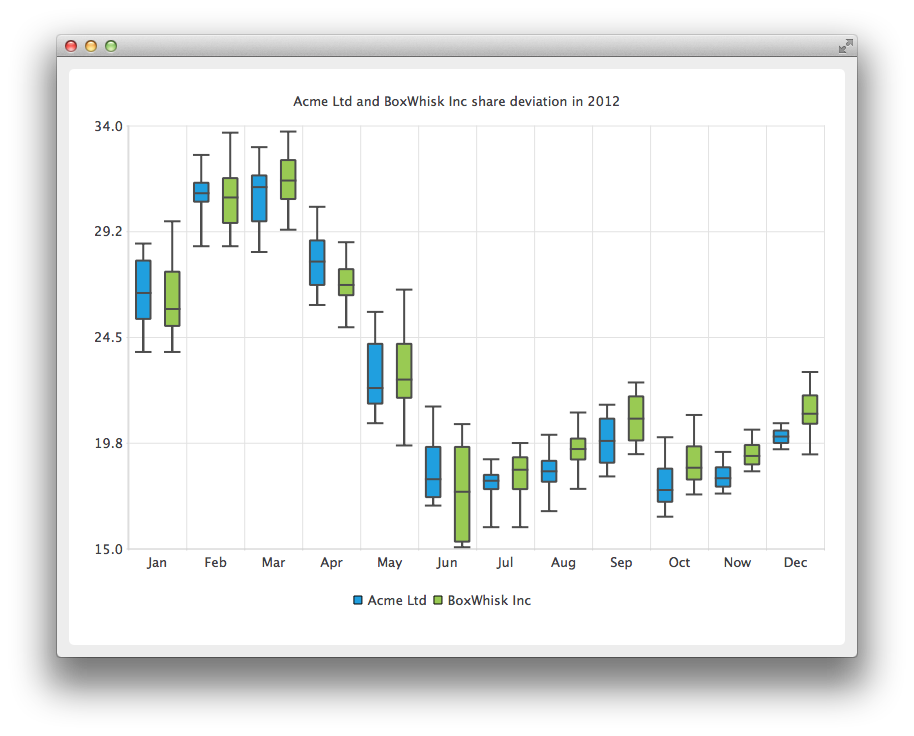

QBoxPlotSeries Class
The QBoxPlotSeries class presents data in box-and-whiskers charts. More...
| Header: | #include <QBoxPlotSeries> |
| Instantiated By: | BoxPlotSeries |
| Inherits: | QAbstractSeries |
Properties
|
Public Functions
| QBoxPlotSeries(QObject *parent = nullptr) | |
| virtual | ~QBoxPlotSeries() |
| bool | append(QBoxSet *set) |
| bool | append(const QList<QBoxSet *> &sets) |
| bool | boxOutlineVisible() |
| QList<QBoxSet *> | boxSets() const |
| qreal | boxWidth() |
| QBrush | brush() const |
| void | clear() |
| int | count() const |
| bool | insert(int index, QBoxSet *set) |
| QPen | pen() const |
| bool | remove(QBoxSet *set) |
| void | setBoxOutlineVisible(bool visible) |
| void | setBoxWidth(qreal width) |
| void | setBrush(const QBrush &brush) |
| void | setPen(const QPen &pen) |
| bool | take(QBoxSet *set) |
Reimplemented Public Functions
| virtual QAbstractSeries::SeriesType | type() const override |
Signals
| void | boxOutlineVisibilityChanged() |
| void | boxWidthChanged() |
| void | boxsetsAdded(const QList<QBoxSet *> &sets) |
| void | boxsetsRemoved(const QList<QBoxSet *> &sets) |
| void | brushChanged() |
| void | clicked(QBoxSet *boxset) |
| void | countChanged() |
| void | doubleClicked(QBoxSet *boxset) |
| void | hovered(bool status, QBoxSet *boxset) |
| void | penChanged() |
| void | pressed(QBoxSet *boxset) |
| void | released(QBoxSet *boxset) |
Detailed Description
A box plot series acts as a container for box-and-whiskers items. Items from multiple series are grouped into categories according to their index value.
The QBarCategoryAxis class is used to add the categories to the chart's axis. Category labels have to be unique. If the same category label is defined for several box-and-whiskers items, only the first one is drawn.
See the Charts with Widgets Gallery to learn how to create a box-and-whiskers chart.

See also QBoxSet and QBarCategoryAxis.
Property Documentation
boxOutlineVisible : bool
This property holds the visibility of the box outline.
Access functions:
| bool | boxOutlineVisible() |
| void | setBoxOutlineVisible(bool visible) |
Notifier signal:
| void | boxOutlineVisibilityChanged() |
boxWidth : qreal
This property holds the width of the box-and-whiskers item. The value indicates the relative width of the item within its category. The value can be between 0.0 and 1.0. Negative values are replaced with 0.0 and values greater than 1.0 are replaced with 1.0.
Access functions:
| qreal | boxWidth() |
| void | setBoxWidth(qreal width) |
Notifier signal:
| void | boxWidthChanged() |
brush : QBrush
This property holds the brush used to fill the boxes of the box-and-whiskers items.
Access functions:
| QBrush | brush() const |
| void | setBrush(const QBrush &brush) |
Notifier signal:
| void | brushChanged() |
[read-only] count : const int
This property holds the number of box-and-whiskers items in a box plot series.
Access functions:
| int | count() const |
Notifier signal:
| void | countChanged() |
pen : QPen
This property holds the pen used to draw the lines of the box-and-whiskers items.
Access functions:
| QPen | pen() const |
| void | setPen(const QPen &pen) |
Notifier signal:
| void | penChanged() |
Member Function Documentation
[explicit] QBoxPlotSeries::QBoxPlotSeries(QObject *parent = nullptr)
Constructs an empty box plot series that is a QObject and a child of parent.
[virtual noexcept] QBoxPlotSeries::~QBoxPlotSeries()
Removes the series from the chart.
bool QBoxPlotSeries::append(QBoxSet *set)
Adds a single box-and-whiskers item specified by set to the series and takes ownership of it. If the item is null or it already belongs to the series, it will not be appended. Returns true if appending succeeded.
bool QBoxPlotSeries::append(const QList<QBoxSet *> &sets)
Adds a list of box-and-whiskers items specified by sets to the series and takes ownership of them. If the list is null or the items already belong to the series, it will not be appended. Returns true if appending succeeded.
[signal] void QBoxPlotSeries::boxOutlineVisibilityChanged()
This signal is emitted when the box outline visibility changes.
Note: Notifier signal for property boxOutlineVisible.
QList<QBoxSet *> QBoxPlotSeries::boxSets() const
Returns a list of box-and-whiskers items in a box plot series. Keeps the ownership of the items.
[signal] void QBoxPlotSeries::boxWidthChanged()
This signal is emitted when the width of the box-and-whiskers item changes.
Note: Notifier signal for property boxWidth.
[signal] void QBoxPlotSeries::boxsetsAdded(const QList<QBoxSet *> &sets)
This signal is emitted when the list of box-and-whiskers items specified by sets is added to the series.
[signal] void QBoxPlotSeries::boxsetsRemoved(const QList<QBoxSet *> &sets)
This signal is emitted when the list of box-and-whiskers items specified by sets is removed from the series.
[signal] void QBoxPlotSeries::brushChanged()
This signal is emitted when the brush used to fill the boxes of the box-and-whiskers items changes.
Note: Notifier signal for property brush.
void QBoxPlotSeries::clear()
Removes all box-and-whiskers items from the series and permanently deletes them.
[signal] void QBoxPlotSeries::clicked(QBoxSet *boxset)
This signal is emitted when the user clicks the box-and-whiskers item specified by boxset in the chart.
int QBoxPlotSeries::count() const
Returns the number of box-and-whiskers items in a box plot series.
Note: Getter function for property count.
[signal] void QBoxPlotSeries::countChanged()
This signal is emitted when the number of box-and-whiskers items in the series changes.
Note: Notifier signal for property count.
[signal] void QBoxPlotSeries::doubleClicked(QBoxSet *boxset)
This signal is emitted when the user double-clicks the box-and-whiskers item specified by boxset in the chart.
[signal] void QBoxPlotSeries::hovered(bool status, QBoxSet *boxset)
This signal is emitted when a mouse is hovered over the box-and-whiskers item specified by boxset in the chart. When the mouse moves over the item, status turns true, and when the mouse moves away again, it turns false.
bool QBoxPlotSeries::insert(int index, QBoxSet *set)
Inserts a box-and-whiskers item specified by set to a series at the position specified by index and takes ownership of the item. If the item is null or already belongs to the series, it will not be appended. Returns true if inserting succeeds.
[signal] void QBoxPlotSeries::penChanged()
This signal is emitted when the pen used to draw the lines of the box-and-whiskers items changes.
Note: Notifier signal for property pen.
[signal] void QBoxPlotSeries::pressed(QBoxSet *boxset)
This signal is emitted when the user clicks the box-and-whiskers item specified by boxset in the chart and holds down the mouse button.
[signal] void QBoxPlotSeries::released(QBoxSet *boxset)
This signal is emitted when the user releases the mouse press on the box-and-whiskers item specified by boxset in the chart.
bool QBoxPlotSeries::remove(QBoxSet *set)
Removes the box-and-whiskers item specified by set from the series and permanently deletes it if the removal succeeds. Returns true if the item was removed.
bool QBoxPlotSeries::take(QBoxSet *set)
Takes the box-and-whiskers item specified by set from the series. Does not delete the item.
Note: The series remains the item's parent object. You must set the parent object to take full ownership.
Returns true if the take operation succeeds.
[override virtual] QAbstractSeries::SeriesType QBoxPlotSeries::type() const
Reimplements an access function for property: QAbstractSeries::type.
Returns the type of the series.
See also QAbstractSeries and SeriesType.